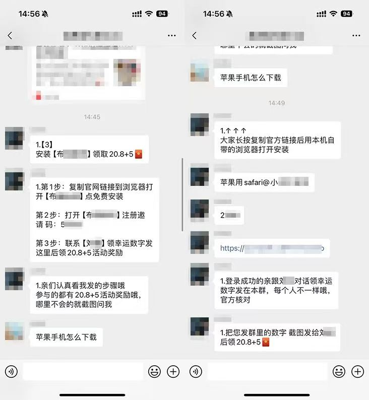
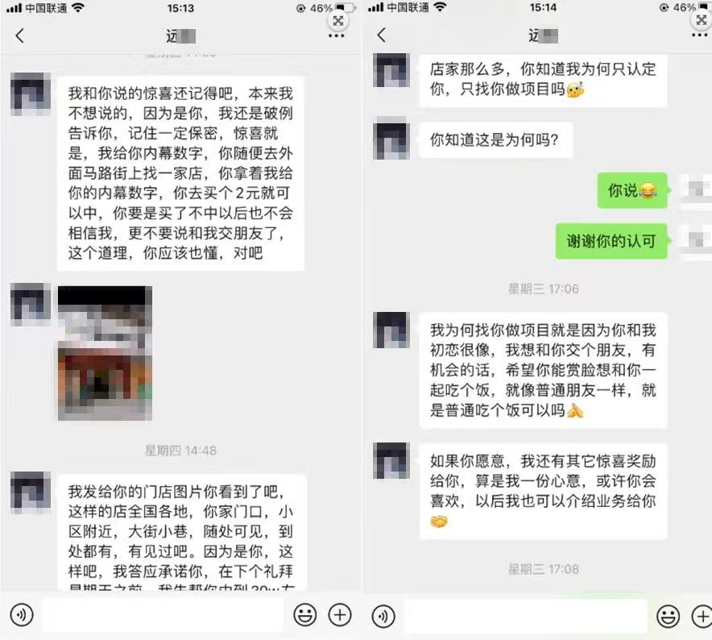
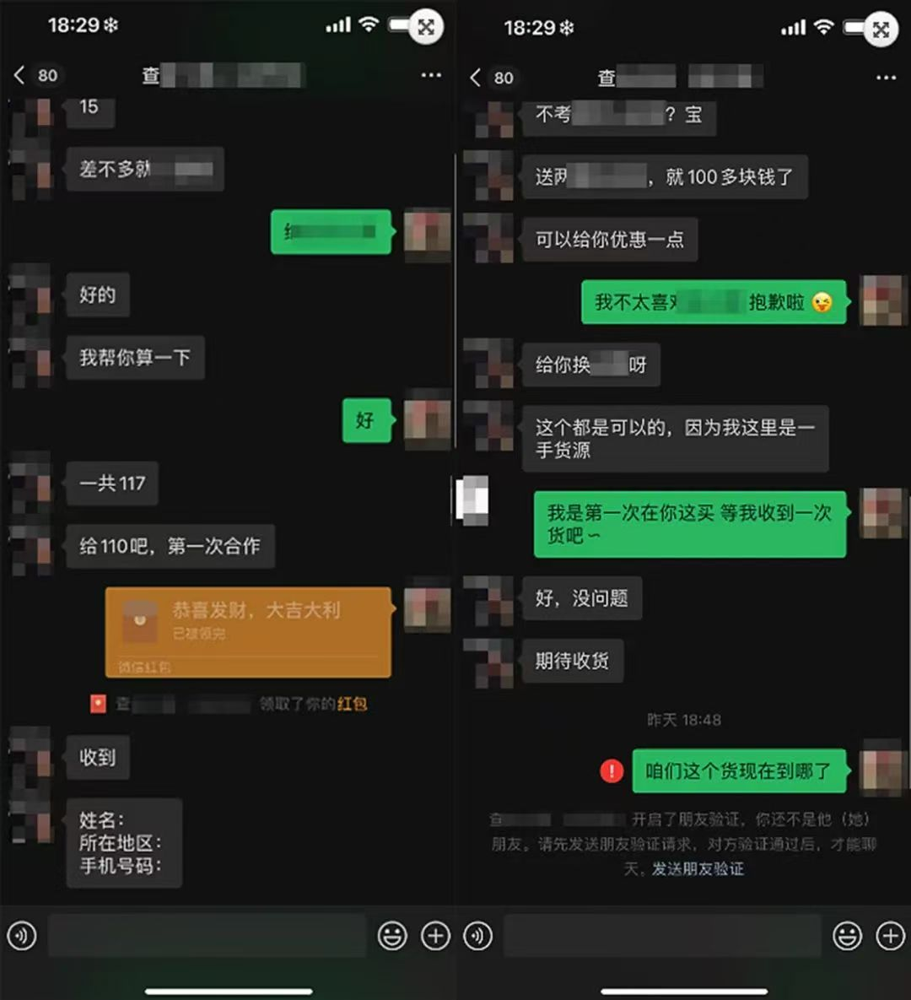
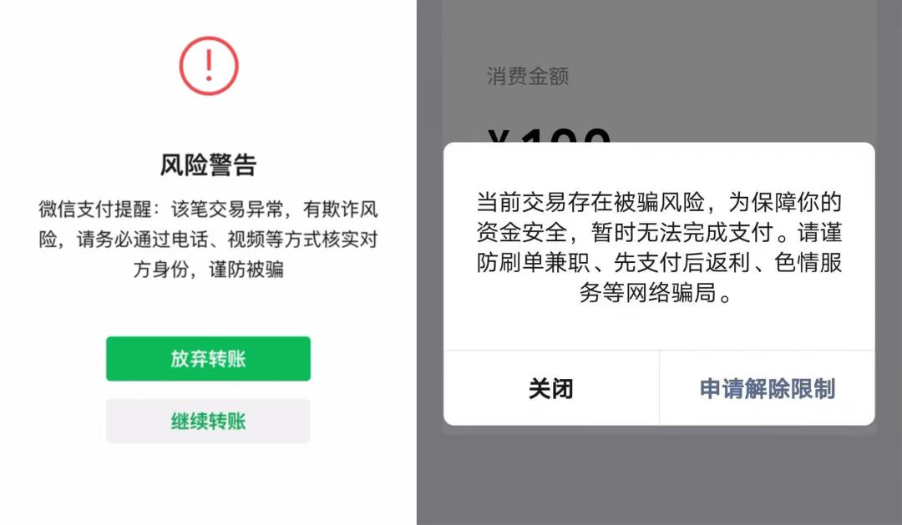
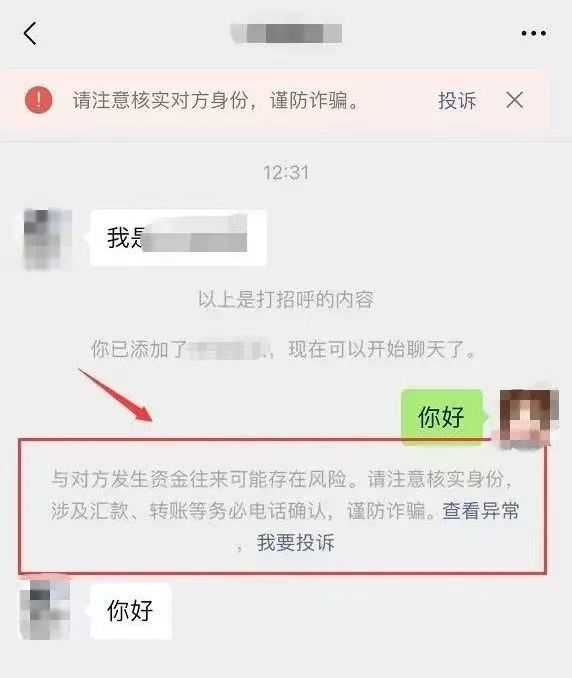
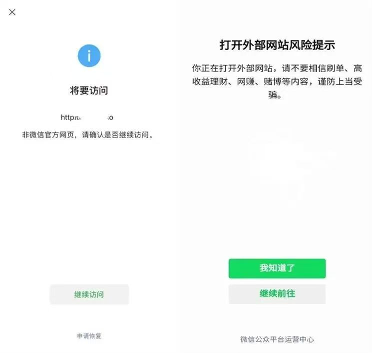
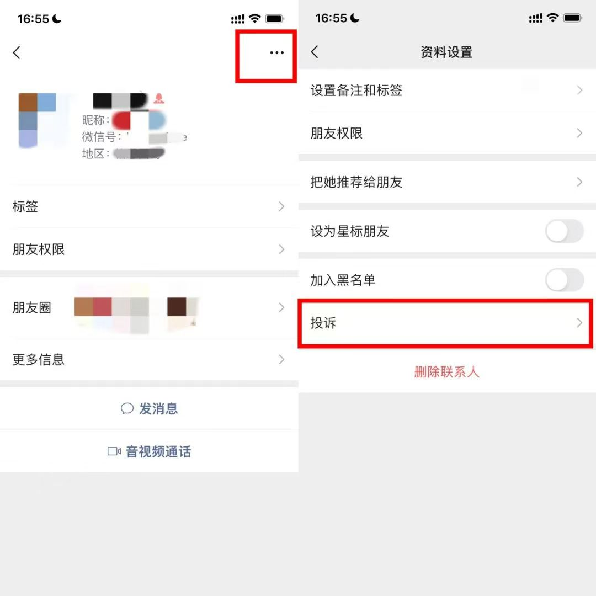
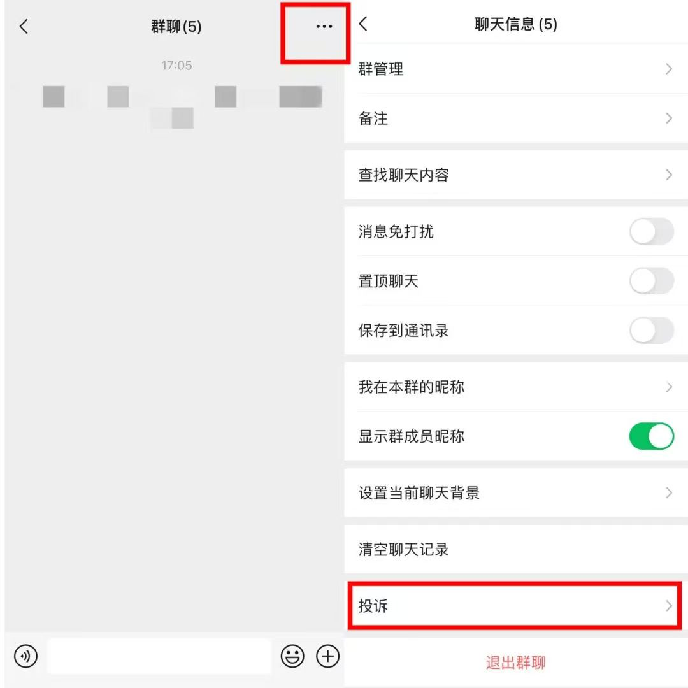
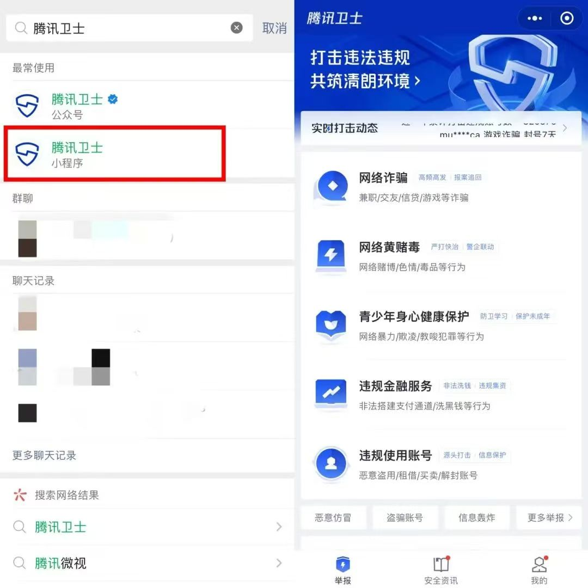

如何防止网络诈骗
网络诈骗是指犯罪分子通过编造虚假信息，设置骗局，对受害人实施远程、非接触式诈骗，诱使受害人给犯罪分子打款或转账的犯罪行为。
近年来互联网上各类安全事件屡屡发生，个人信息及隐私数据也常有泄露，不法分子窃取用户私人信息后，往往会进一步进行各类诈骗，盗取用户财产。
微信用户可通过以下指引，了解几种常见的诈骗方式，提高防范意识，杜绝此类网络欺诈。
常见网络骗局
1.刷单骗局：骗子通常利用扫码免费送、招聘兼职等方式将受害人拉入“做任务”的群聊，在群聊中发布任务诱导受害人完成并返还小额佣金，以此诱惑受害人进一步参与更大金额的刷单任务，而后再以任务未完成、系统维护等原因拒绝返现，实施欺诈。

2.交友骗局：骗子通常以有钱有颜有头脑的完美人设出现，在各类社交平台上寻找目标添加好友。先是在每日的嘘寒问暖中与受害人建立感情联系，接着通过诱导受害人使用虚假平台投资博彩或直接索取礼品礼金等方式实施欺诈。

3.交易骗局：骗子通常通过网络发布大量低价虚假产品信息（或以各种名义诱骗用户进行资金转账）吸引用户，以先付款后才能发货为由，要求用户先行支付货款。等付款后，骗子便将受害人拉黑删除，完成欺诈。

温馨提醒
不要轻信诈骗分子的说辞，不贪图小利。刷单不仅容易遭遇欺诈，还属于违法行为，请大家切勿参与。
网络交友需谨慎，在无法面见对方，确认核实对方身份之前，都要保持警惕。不要轻易相信对方说辞，避免向对方透露重要的个人信息，更不要与对方产生任何交易往来。
网上购物，请尽量选择正规官方平台，避免脱离平台私下交易。
若不幸遭遇欺诈，请及时保留相关证据，向公安机关报警处理。
另外，微信各个场景中的“安全提醒”也是辨别欺诈行为的重要途径之一，根据用户当前被骗风险程度，我们对有可能造成风险的场景，会进行安全提示。比如：
微信支付或转账时的风险警告

添加陌生好友聊天时的身份确认提醒

打开有未知风险的外部链接或跳转第三方页面时

对抗欺诈，举报有道
为了避免更多人被骗，若在微信平台内发现有疑似欺诈行为，可通过微信客户端、腾讯卫士小程序进行举报。我们接到举报会尽快完成审核，对利用微信实施欺诈行为的用户，一经确认，将对违规账号进行梯度处罚直至封停处理，并将审核结果反馈给用户。
1.投诉个人用户：在用户的“详细资料”页面中点击右上角的“...”键→点击“投诉”即可

2.投诉微信群：点击微信群右上角的“...”键→点击“投诉”即可

3.通过小程序举报：搜索“腾讯卫士”小程序→选择举报类别→填写举报内容→点击“提交”即可

微信一直致力于为用户提供绿色、健康的生态环境，微信用户在使用微信账号过程中不得违反现行法律法规。对于用户提供的举报证据，微信都将秉承公正负责的态度审查。一经核实，微信将按照相关法律法规及用户协议规则，对违规行为进行处理，并配合有权机关维护微信用户及其他主体的合法权益。
面对网络欺诈，微信诚邀大家与我们一起，共建安全、健康、绿色的平台生态环境！